Week 01 - 11/02/25
Week 02 - 18/02/25
Week 03 - 25/02/25
Week 04 - 04/03/25
Week 05 - 11/03/25
Week 06 - 18/03/25
Week 07 - 25/03/25
Week 01 - 11/02/25
Excited to be starting the group project! I am in a group with 3 people (Molly, Min and I), and our topic will be about intergenerational trauma. Because there are only 3 people in our group, we will have to be mindful of the scope. This week we went over scrollytellying examples and I started having a better idea of what our project might look like. We also presented our pitch during class. Below, in order from left to right: Min, Molly, and me.

I am not in charge of the research or script, so I am waiting on my group members to see what they land on in terms of the content. I will provide feedback on the content, and hopefully we can move forward with the script and visuals. There are two main methods of inheriting trauma, and we are having a meeting soon to discuss which one we’d like to focus on, and how in depth we are presenting the topic. We will have to adjust our timeline to accommodate for this though, because we planned to finish scripting and research much earlier than what panned out.
In terms of the visuals, I populated the moodboard with inspiration, ranging from UI examples to 3D modelling and 2D illustration styles. Our scrollytelly will have a mix of 2D and 3D elements. We decided to pursue a visual style for our scrollytelly that was inspired the comic “Here”, where the whole story takes place in the same location, but at different time points, with overlayed panels over the static background. See the example below; its much easier to see the effect visually.
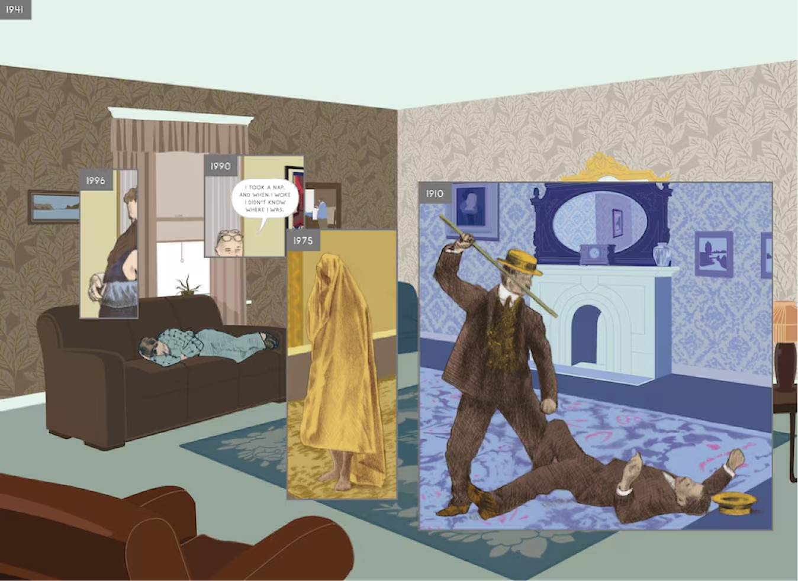
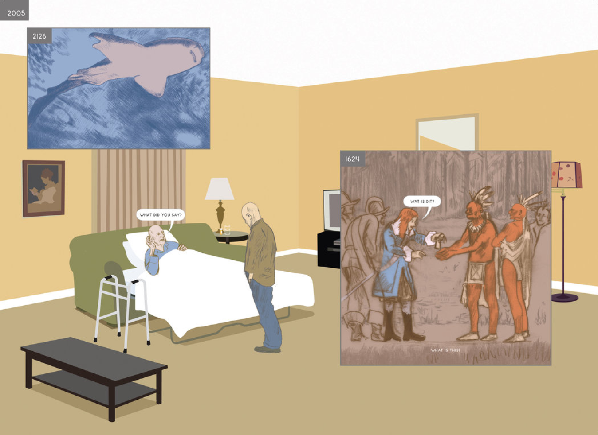
We intend to have a scrollytelly that has the same static environment, but as you scroll, new overlays and boxes will appear over the environment, bringing new information. The environment will probably be 2D, and the overlays will have 3D models.
I am also responsible for putting together the design document, and I am planning on typing everything out after we finalize some details. The draft we submit may be missing some stuff but we should have a rough draft ready for the due date. I will be typing it out on Google docs before putting it onto our shared Figma file for nicer formatting.
Our official team picture is as follows:
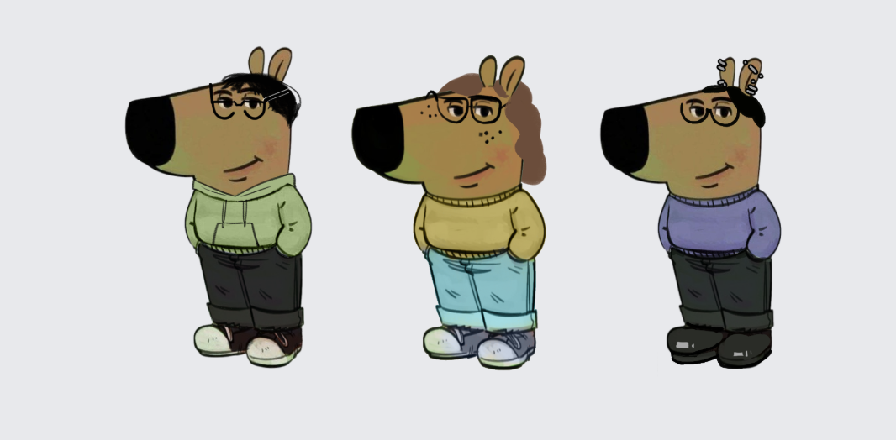
Week 02 - 18/02/25
We are continually refining our script and storyboard as we move along. I have reviewed the iterations of storyboards by both Min and Molly, and arrived at the conclusion that developing our entire scrollytelly may not be feasible given our timeline. Molly’s script was quite simple, but there were more details in Min’s iteration. We will need to move forward with finding a balance between the two. We will need to check in with Alex to see if we can develop certain portions of the story instead of the whole thing. It would make sense to develop the introduction to give some context, and then some other part later on. Molly is away so I had a meeting with Min to discuss this, but we will need to touch base altogether when Molly is available. We also have to consider the 3D elements in our project; a goal we initially set was to create nice 3D assets as a way to practice our 3D skills so we have to ensure that we find a place for that in the parts of the scrollytelly we do intend to develop. Below are the storyboards Min and Molly created:
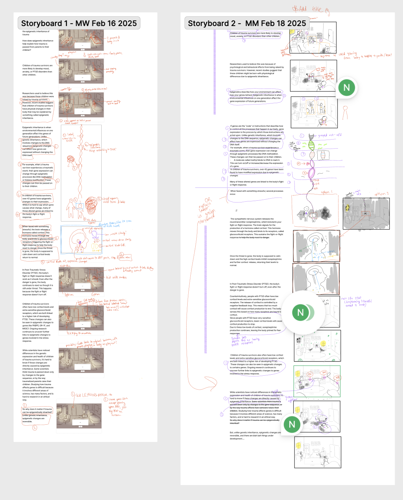
This week is reading week so we have a bit less work (or at least less work on my end). Although we planned out roles and responsibilities quite early on, I feel that because we are a smaller group, our responsibilities are a bit more fluid. I will have to go back and change that chart later on when I am creating the final design doc. It might help to have the “Lead”, “Contribute” and “Consult” categories for each role and each person. My next steps are to look further into the scrollytellying software that I will be using for development of our project. I will be meeting with Min and probably Molly early on the weekend again.
Week 03 - 25/02/25
Reading week is over! But, Molly and I are both sick… hopefully we recover soon, because we really need to get down to business and start with production. We had to adjust the timeline to account for a number of changes to our project. First off, we decided to have the background elements (static scenery of the living space) be 3D modelled instead of purely hand-drawn. After they are crudely modelled, which is a task that was designated to Molly, Min will be going in to trace over the scene and add in small details and the characters. The second change is that I decided we needed an intermediate storyboard stage - we didn’t have the storyboards set up in a way that indicated the script and actions that were happening at the same time. Below is a screenshot of the new storyboard format with a chart, with Min’s previous storyboards.
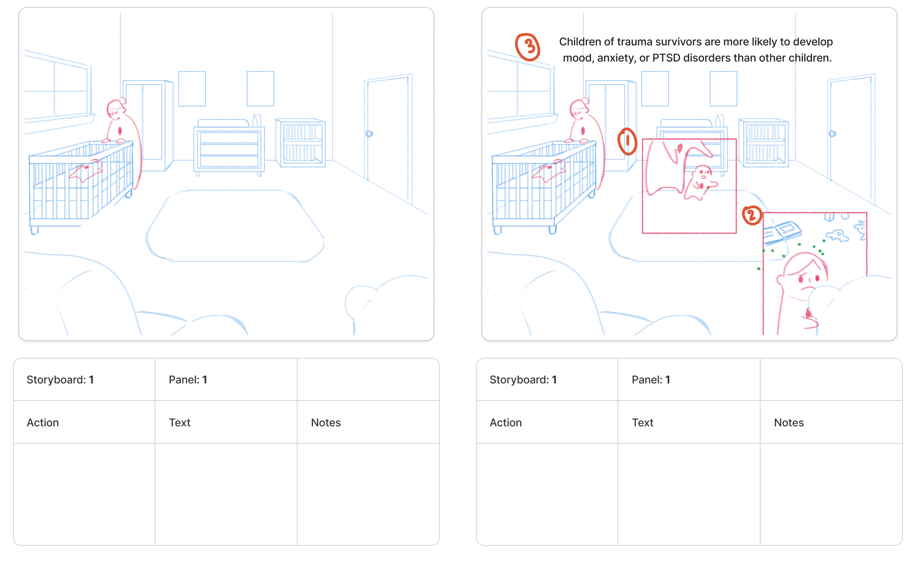
Min will be changing their final storyboards to fit this format and fill out the table where possible, and I will be going in to fill out any missing actions or unaccounted elements that need actions. We also decided to develop the introduction, a bit of the part on epigenetics, and the stress response part of our initial storyboard. Molly will be editing the script for the last time and simplifying the language to better fit the simplified visuals (we have decided that most of the scientific stuff - hormones, proteins, etc.- will be pretty low fidelity and blobby). Alex has suggested we be specific about the reading level, so we will explicitly aim for grade 8 reading level. I think I will change that in the design doc too. In terms of the scrollytellying software, I decided on Webflow because it seems to be the best option for customization and has a decent amount of support online, plus it is free. I was initially going to start on a prototype in Figma, but upon consideration and with advice from Alex, we are switching gears and moving directly into Webflow for the prototype. This should offset the development crunch and learning curve at the end of the project (although it already does feel like a crunch haha..). I will aim to make a really rough prototype by next week with placeholder images where necessary, just to test out the interactivity and to learn how to use Webflow. The start of our prototype currently looks like this (see below).
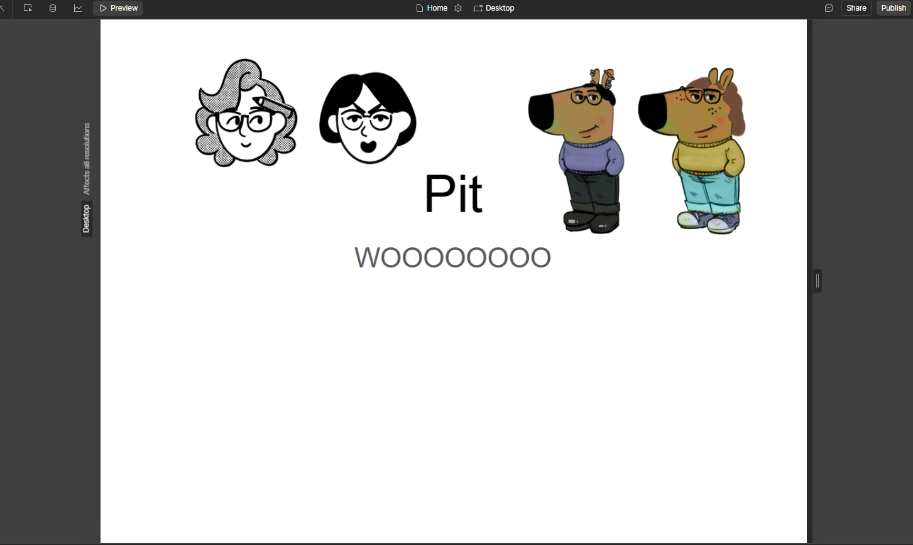
I have also started on the style guide, which is still quite rudimentary and will be subject to change as I develop the prototype. Below you can see the rough style guide and the title card I drafted on Figma.
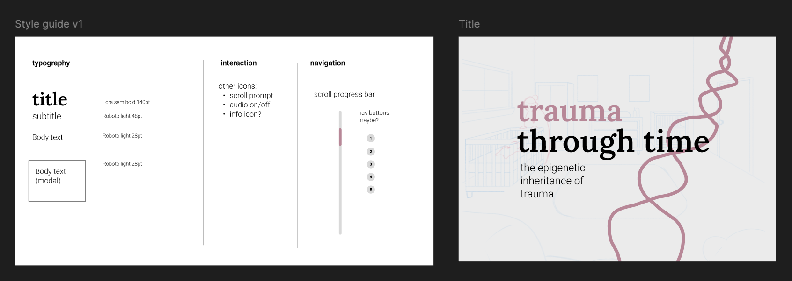
Lots of work to do moving forward, we are jumping into production soon/now! The timeline was adjusted to accommodate for a longer preproduction section. I wanted to be more involved in the 3D modelling, but given that development is a big task, I probably won’t be doing much 3D. But, I might contribute to some of the assets later on (i.e. next week) while Molly takes care of the bulk of it this week. We will see…
Week 04 - 04/03/25
I have been sick for more than a week, with unfortunately not as much progress as I wish to have on this project. Molly and Min have worked very hard on the script, making sure that certain details in the epigenetic/PTSD stress response section are correct but still explained in a way that would be understood by a lay audience. I helped mediate between the different changes on the script, and provided feedback when needed. I also reviewed the final version for wording and grammar. We went back and forth on the script a lot and finally arrived at the final script- V6 (see below..)
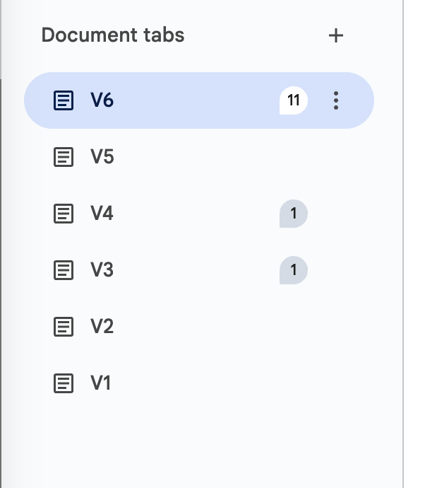
We got some more feedback from Alex today so we have a few revisions, but other than that, we’re pretty much done with the script! Min has made some great progress in the concept art and we are currently finalizing what the mother and child will look like. After this, Min will continue on with creating the final 2D assets. Molly has modelled the environment in Maya (with some bloopers - it initially looked kind of scary and almost haunted…)

Molly will be rendering the environments today and handing it off to Min for the final 2D pass. Molly has also helped set up the Webflow prototype, given that I am falling behind schedule due to my illness :(. I will be picking it back up and learning Webflow ASAP so that I can churn out a more refined prototype that has working interactions. It helps that we now have an extension on our group project due dates. We can also likely develop the middle section of our scrollytelly so that instead of having two separate sections of it done, we can have have the entire beginning/middle of the story in one continuous sequence developed. I have to review the class today with Molly/Min on real-time rendering and stuff so we’re on the same page for what’s happening for the project. I also need to meet with Molly to discuss the stuff she did on Webflow. We have some good next steps, but we really need to start grinding out our work for this project (me especially). I hope I am not sick for much longer!!!!!!!!!
Week 05 - 11/03/25
I tried to figure out some interactions with Webflow this week, but I was struggling with various interactions and putting them together. I have more tutorials to watch and consult and I am still working through the initial prototype. For the script, we found out there was a discrepancy in the science so we were once again editing that. Min settled on the final script and we have all reviewed it. The storyboard has also been updated by Min to reflect the script changes, and I have also reviewed that, with some minor things to add (e.g. the legend for the molecules in the stress response section). Molly has taken on most of the production for 3D assets because I am still behind with development. Molly created the DNA strand, and is moving onto the molecules. We have decided to not use the accurate representations of the molecules, and instead use symbolic ones instead so it is easier for the viewer to understand. The existing models of the molecules may be implemented in the scrollytelly but will for sure be documented in the design document. The roles and responsibilities section will ahve to change to reflect the shifting division of responsibilities. We have not decided on whether or not we still want to move forward with developing the middle section of our story yet given that I am behind on the development, but this will hinge on how far I get on my Webflow work this coming weekend. I have set up a time to meet with Alex on Monday so we can iron out any dev problems once I’ve worked through more of the prototype. I think being sick for 2 weeks really set back some of my progress, but we also do only have 3 people working on this project so I will keep that in mind as I catch-up with work.
Week 06 - 18/03/25
I spent a lot of time this week trying to figure out interactions and prototyping on Webflow. The basic interactions were there, but I was trying to get our insets to scroll in with a sticky position on the screen. This was very difficult and I just could not get the alignment right on the insets and the backgrounds - they wouldn’t match up. Having the background and insets match up is essential for our project and the basis of what we designed on (see earlier dev diary entry where I mention the book “Here”). After a lot of troubleshooting I have decided that the insets will not be separate elements in the prototype - they will just be part of the background that changes as you scroll. Only the text will be a separate element on Webflow. See below for a screenshot of the prototype title screen. The text and rough DNA strand are animated.
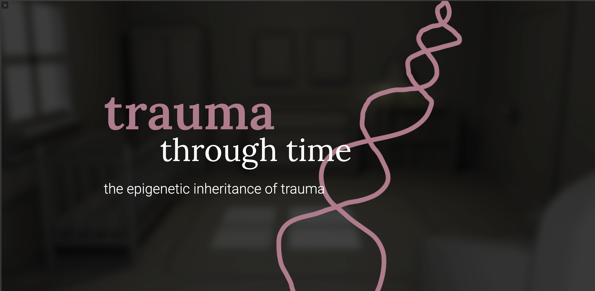
Below is the section where I was testing out the alignment. The storyboard 2D illustration in the bottom right corner (drawn by Min) was used to test out the sticky position of insets during scroll. It worked fine, but it wouldn’t align perfectly with the background. After another few iterations, I decided to just incorporate the inset with the background as one flat image. The pink coloured box was originally a separate test inset for alignment. I am sacrificing the scrolling & sticky position effect by doing this.

Another note on the alignment: the way I have the current Webflow set up is that all the backgrounds are fading in and out as you scroll (so they are all stacked on top of eachother on the website, just at 0 opacity most of the time). The way they are appearing is keyframed by percentage of the scroll progress through the entire website, so this is going to be relatively tedious. I might have to plan this all out (percentages and what appears when) externally first, maybe on Figma, before I go straight into dev on Webflow. I have a lot to do… you can see the timeline for the scroll interaction I had for the prototype below. I could not get the alignment to work properly with each of the sections that scrolled by, but maybe I’ll try it once more before fully giving up….
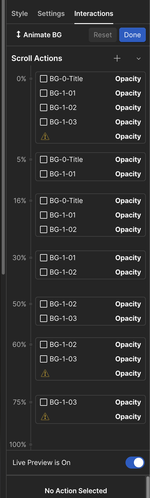
I still have to figure out how to add in the videos on scrub. It seems like Webflow requires custom code in order to scrub videos on scroll. I found a good tutorial on Youtube that also has custom code and relatively detailed instructions. The only thing is that you have to pay to have custom code on Webflow - Molly and Min agreed that it was a good idea to pay so we can at least try it out, even if it doesn’t work. I paid for the monthly plan and we split the cost ($26!!! could be cheaper…). I am in the middle of trying out the code on the video I’ve put in the prototype. I’ve got the video scrolling position lined up nicely, but I’m still figuring out the scrubbing. Hopefully it works, but if it doesn’t I might have to look into alternatives. I have been feeling a bit frustrated with development overall, but I’m sure it will come together in the end, I just have a lot more work lined up for the next week.
Week 07 - 25/03/25
FINAL DEV DIARY! Lots happened between last Tuesday and this Tuesday. Starting chronologically… on Wednesday, I could not get the scroll/scrubbing to work for the video. I asked Michael for help (thank you Michael!!!), and he spent about 3 hours trying to help troubleshoot it, but to no avail. It would be possible to figure out, but not with our timeline, so I had to find alternatives. I ran into numerous issues with Webflow, timing, alignment and otherwise. The scroll interactions I had initially set up stopped working, so I did some troubleshooting again with Alex on Friday. The final method I decided to go with for our prototype is as follows… 1) the scrolling text that showed up were done as sticky blocks in sections, as you can see below in the Navigator panel on the left.
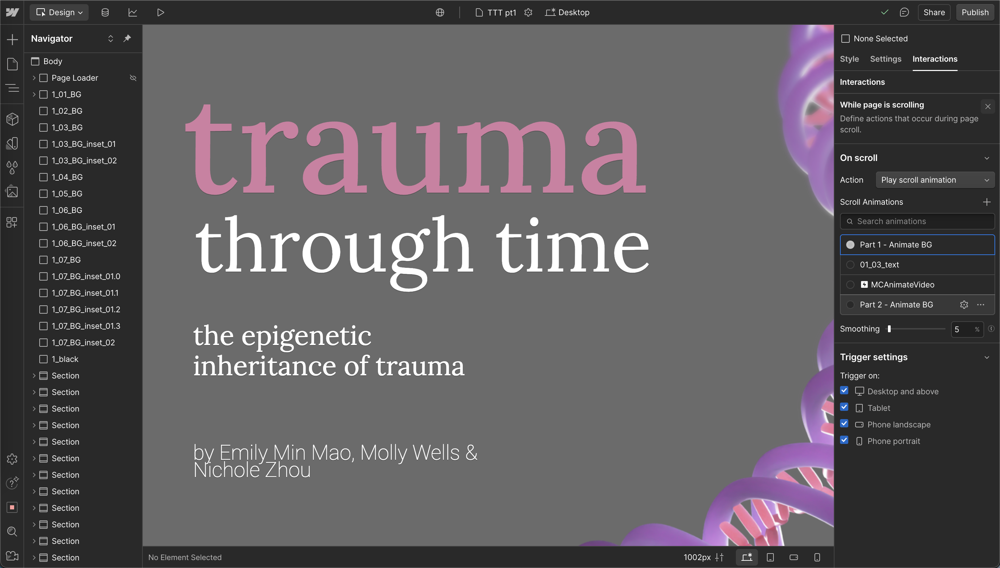
2) the imagery & overlays were all flat, static backgrounds that were fixed on the page. As you scroll, you would be changing the opacity of the backgrounds so that the next background would fade into 100% opacity over the previous. This helps “fake” some animation, as we had the sections that were supposed to be video as almost animatic-esque stills. However, this meant that I had to spend a lot more time setting up the timing. The process of doing this is by keyframing the background opacity by percentage of scroll through the website. The website length then influences this timing. I have accidentally changed the website length and messed up the timing of the backgrounds on many many occasions. My initial plan was to put all the backgrounds on and then time the text, but the best way to develop this turned out to be checking the keyframing of the backgrounds with the text timing concurrently, so it was a lot of back and forth and troubleshooting various timing errors. This definitely isn’t the most optimal workflow and that’s why it took so long… I ran into so many issues… My final Webflow crash tally was 52. Near the end of the prototype, Webflow was getting very buggy and not working well - the backgrounds weren’t loading in properly and fade / timed interactions weren’t working. See below for an example.
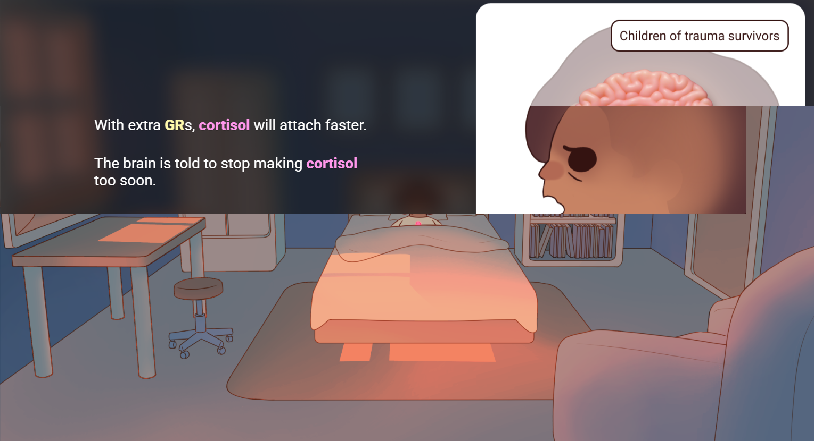
It got so bad that Webflow lost its GUI… the publish button section wasn’t working (see below).

I was making this on PC, but optimized it and recording the scroll on my Macbook (the Macbook has smoother scroll). I tried optimizing the images to see if that would help but the difference it made was miniscule, but at least the Webflow GUI was working normally on PC again. The workaround for this was to record the first parts of the prototype on my Macbook, and for the last part that just wouldn’t run properly on Mac, I would record it on my PC and splice it together in AE. I put together the videos in AE and did some editing, and then passed it off to Molly for final touches before our presentation. I also spent some time wrapping up the preproduction document and cleaning up the slides. All in all, we worked really hard and I think we did a great job! The scrollytelly works (to a certain degree), but is optimized for viewing on my 14” Macbook on Google Chrome at 75% zoom.